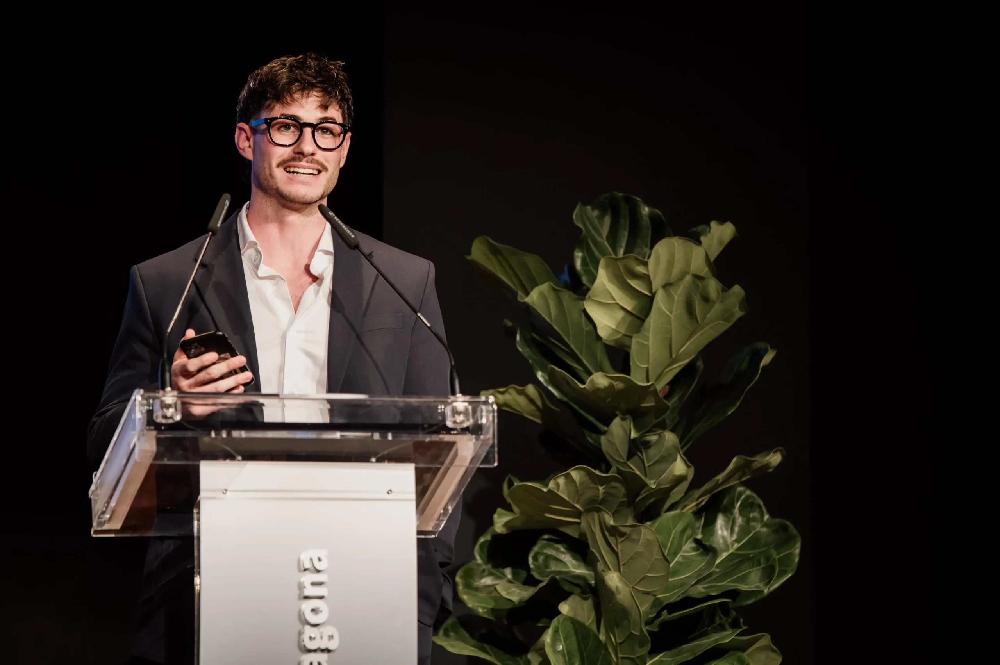
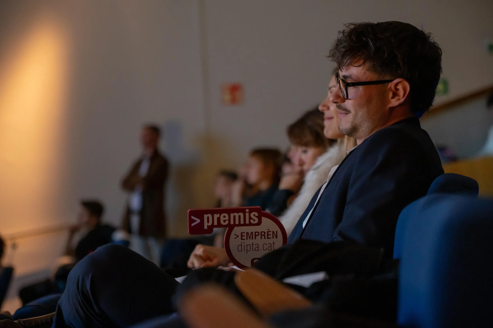

We at NeumaCare are deeply proud to announce that our project has been named best business project at the Premis Emprèn 2025, promoted by the Diputació de Tarragona. This recognition marks a key milestone on our journey and reaffirms the validity of a vision that places emotional and human wellbeing at the centre of the hospital experience.
Recognition for talent and innovation with real impact
The Premis Emprèn 2025 distinguished ten projects from Camp de Tarragona, Terres de l'Ebre and Baix Penedès for their capacity to innovate, generate added value and contribute to the development of the territory.
In this 13th edition — marked by an especially high participation of nearly seventy candidacies — NeumaCare was selected as one of the standout projects, alongside initiatives from sectors as diverse as health, accessibility, video games with social impact, artificial intelligence and sustainable fashion.

A boost to keep growing
The Premis Emprèn call is endowed with €40,000 — €4,000 per awarded project — and includes personalised advisory services to support the development and consolidation of the recognised initiatives.
For NeumaCare, this support represents a concrete opportunity to:
- Advance clinical validation of the sensory AI platform
- Strengthen technological development across hardware and software
- Accelerate deployment of the system in healthcare facilities across the region

Gratitude and a look to the future
We sincerely thank the Diputació de Tarragona, the Premis Emprèn jury and all the individuals and institutions that trust in projects with a transformative vocation. This recognition also belongs to all the healthcare professionals who believe in a more human medicine — and to all the people who, through their hospital experience, call for kinder and more welcoming environments.
"At NeumaCare we continue working with the same conviction: the future of healthcare is more human. This award encourages us to keep moving forward with rigour, sensitivity and commitment to the territory."
— David Sevilla, CEO of NeumaCare
We are grateful for every step of support. This is just the beginning.